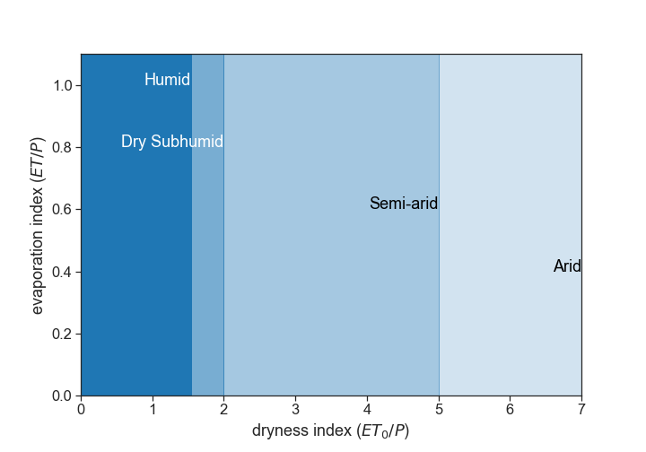
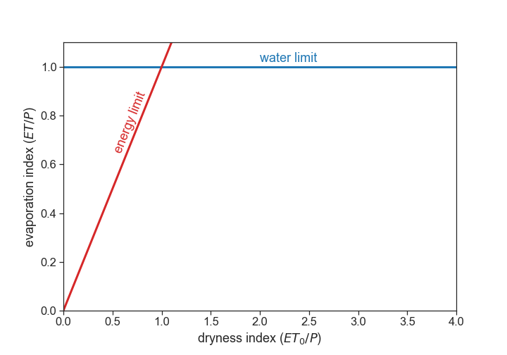

16 Budyko framework
Sources used:
{% cite daly2019linking %}, {% cite sposito2017understanding %}, {% cite jones2012ecosystem %}, {% cite krajewski2021attempt %}, {% cite berghuijs2020unanswered %}, {% cite creed2012budyko %}
16.1 Water and surface energy balances
For long-term averages:
\[ P = ET+Q \]
\[ R_n = \lambda_w\cdot ET + H \]
- \(P\): precipitation (L T\(^{-1}\), e.g.: mm/day)
- \(ET\): evapotranspiration (L T\(^{-1}\))
- \(Q\): streamflow (L T\(^{-1}\))
- \(R_n\): net energy available at soil surface (M T\(^{-3}\), e.g.: W m\(^{-2}\))
- \(\lambda_w\): latent heat of vaporization of water (M L\(^{-1}\)T\(^{-2}\), as defined here, the units will be weird)
- \(H\): sensible heat flux from the surface into the atmosphere (M T\(^{-3}\))
- \(\lambda_w \cdot ET\): latent heat flux (M T\(^{-3}\))
16.2 Assumptions
- because we are dealing with long-term averages, there are negligible changes of watershed stored water.
- negligible energy is stored at the soil surface, and heat transfer from soil surface to deeper soil layers (\(G\)) averages zero.
16.3 Question
Given measurements of rainfall and meteorological conditions, can we predict the partitioning of \(P\) between \(ET\) and \(Q\)?
16.4 Limits
For very dry watersheds (deserts, for example), almost all precipitation (\(P\)) is lost via evapotranspiration (\(ET\)). These watersheds are called water limited.
In wet watersheds, at the annual scale, the sensible heat (\(H\)) is directed from the surface to the atmosphere in almost all climatic zones on Earth (meaning: soil heats air). Therefore, \(H\) cannot supply much energy to the soil surface, and it is assumed that \(R_n\) provides entirely the energy required for evapotranspiration. Dividing the second equation by \(\lambda_w\), we get \(R_n/\lambda_w = ET + H/\lambda_w\). It is clear that the maximum possible \(ET\) occurs when all incoming radiation energy \(R_n\) is consumed by evapotranspiration \(ET\), and there is negligible sensible heat flux \(H\). As a result, the upper limit of \(\lambda_w E\) is \(R_n\), in wet watersheds. In these watersheds, called energy limited, \(ET\) tends to the potential evapotranspiration (\(ET_0\)).
16.4.1 Summary:
For energy-limited watersheds
- As precipitation \(P\rightarrow \infty\), evapotranspiration \(ET\rightarrow ET_0\)
For water-limited watersheds
- As potential evapotranspiration \(ET_0\rightarrow \infty\), actual evaporation \(ET\rightarrow P\)
In general, we can write
\[ ET = f(P,ET_0) \]
The variables \(P\) and \(ET\) have the same dimenstions (L T\(^{-1}\)), and we can divide the equation above by \(P\):
\[ \frac{ET}{P} = f(D_I), \]
where \[ D_I = \displaystyle\frac{ET_0}{P} \] is called the dryness index. A useful classification is
| Dryness Index | Classification |
|---|---|
| \(D_I < 1.54\) | Humid |
| \(1.54 < D_I < 2\) | Dry Subhumid |
| \(2 < D_I < 5\) | Semi-arid |
| \(5 < D_I < 20\) | Arid |
| \(20 < D_I\) | Hyper-arid |
ATTENTION. The dryness index can also be called the “Aridity Index” (\(AI\)), however sometimes the \(AI\) means the inverse of \(D_I\):
\[AI = 1/D_I\]
Be careful to check the definitions.
The summary (1) and (2) above can be now represented as:
- As \(D_I\rightarrow 0\), \(\displaystyle\frac{ET}{P}\rightarrow D_I\)
- As \(D_I\rightarrow \infty\), \(\displaystyle\frac{ET}{P}\rightarrow 1\)


Budyko (1974), proposed the following equation:
\[ \frac{ET}{P} = \left[ D_I \tanh\left( \frac{1}{D_I} \right)\left( 1-e^{-D_I} \right) \right]^{1/2} \]

Source: {% cite jones2012ecosystem %}

Source: {% cite krajewski2021attempt %}

There are many alternatives to Budyko’s equation. Many equations have adjustable parameters, such as Fu’s equation:
\[ \frac{ET}{P} = 1 + D_I - (1 + D_I^w)^{1/w}, \]
where \(w>1\). Each catchment has its own specific parameter \(w\), that may represent biophysical/landscape features. There is no concensus regarding the interpretation of \(w\), ranging from an effective empirical parameter, whose relationship to biophysical features can be discerned, to an arbitrary empirical constant with no a priori physical meaning. Source: {% cite reaver2020reinterpreting %}
Source: {% cite zhang2004rational %}

16.5 Hypotheses for why dryness index controls so much the partitioning of P into ET and Q
Source: {% cite berghuijs2020unanswered %}
- The first is that the Budyko curve is accurate because landscape features (e.g., soils and vegetation) coevolve with the local climate in such a manner that precipitation partitioning into streamflow and evapotranspiration converges towards the Budyko curve
- A second hypothesis is that catchments over time evolve towards the supply and demand limits (rather than towards a curve), because landscapes and their vegetation are unaware of the Budyko curve but do evolve to maximize their use of available resources (including water). However, because limiting factors such as climatic variability exist (which will reduce a catchment’s ability to use all water because it cannot fully buffer the highly variable precipitation input), catchments will tend to not reach these limits. This may lead to an (apparent) existence of the Budyko curve which falls relatively close to the demand and supply limits.
- A third hypothesis is that the existence of a strong universal relationship between aridity and catchment water balances might be explained by an underlying organizing principle such as maximum entropy production because the Budyko curve may be consistent with how hydrologic systems optimally partition water and energy
- A fourth hypothesis is that virtually any landscape and climate combination (also those in heavily disturbed landscapes: e.g., a city, agricultural lands, etc.) will fall near the Budyko curve because climate aridity will dominate precipitation partitioning largely independent of the climate-landscape configuration or any optimization principle.
16.6 Hypotheses for deviations from Budyko curve
Source: {% cite creed2012budyko %}
- Under stationary conditions (naturally occurring oscillations), catchments will fall on the Budyko Curve
- Under non-stationary conditions (anthropogenic climate change), catchments will deviate from the Budyko Curve in a predictable manner
16.6.1 Reasons for falling off the Budyko Curve
- Inadequate representation of P and T (Loch Vale)
- Inadequate representation of ET (Andrews)
- Inadequate representation of Q (Marcell)
- Forest conversion (Coweeta)
- Forest disturbance (Luquillo)
16.6.2 Critique
Source: {% cite berghuijs2020unanswered %}
The (mathematical) specifics of such studies vary, but all approaches are founded on the assumption that catchments follow a (parametric) Budyko curve when aridity changes, and that consequently all other movements in the Budyko space are caused by other factors. The validity of this assumption remains mostly untested, which seems surprising given it underpins all of these studies’ findings.
16.7 References
{% bibliography –cited %}